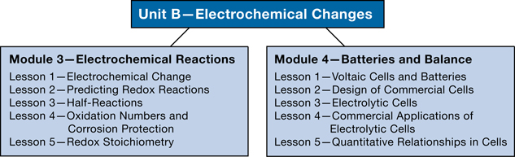

Module 3 introduces the scientific principles associated with reduction-oxidation reactions. You will learn how redox reactions can be used to analyze and predict changes in a chemical system, and you will learn how to perform quantitative analysis. This module will support the work you will do in Module 4.
You will consider the following module questions:
Module 4 explores how technologies, like the commercial electric cells you use to operate your cell phone or other electronic devices, involve an application of redox reactions. You will use your knowledge of electrochemical change to observe, analyze, and evaluate the design and function of electric and electrolytic cells.
You will consider the following module question:
Together these modules develop your understanding that some types of chemical change involve a transfer of electrons. In the last unit of this course you will explore chemical reactions that involve proton transfer reactions. Many of the principles you will learn in Unit B will apply to your work throughout this course.
Each module and lesson contains focusing questions intended to guide your study. The following concept organizers list the module and lesson questions:
As you work your way through each module, think about how the lesson questions relate to the module questions and to questions from other lessons. Use the concept organizers to build a concept map or a graphic organizer for each module. To do this, you might use software you already have on your computer, or you might do an Internet search for free software you can use. In your concept map or graphic organizer, record and demonstrate how the lesson and module concepts are connected and interdependent.
Sample concept maps are provided in the Module Summary for each module. Remember that the samples are just that—they show only one of many possible descriptions. However, if your completed concept map or graphic organizer differs significantly from the sample, you may wish to contact your teacher or to compare your map or organizer to those of your classmates. This will ensure that your interpretations of lesson materials and your descriptions are accurate.